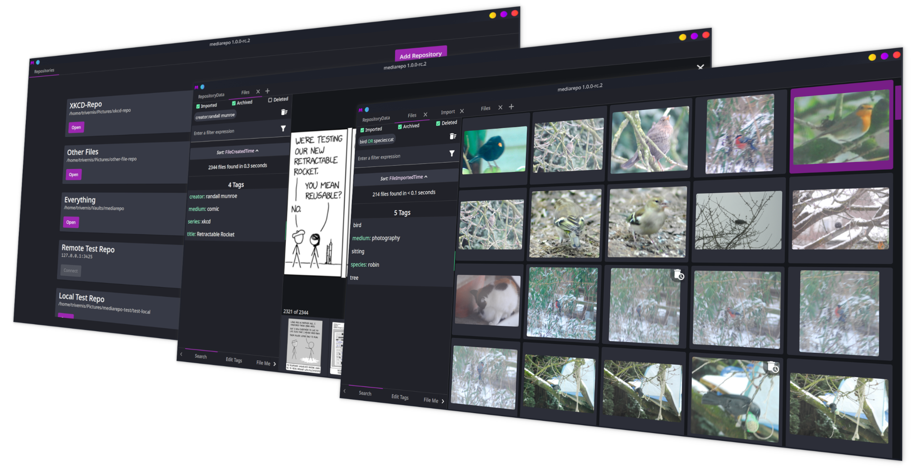

---
# Feel free to add content and custom Front Matter to this file.
# To modify the layout, see https://jekyllrb.com/docs/themes/#overriding-theme-defaults
layout: home
---

Tagging of files
Tags can be assigned to files to describe specific
aspects and group them together.
Searching by tags and file properties
Assigned tags and file properties can be used to
search for files.
Sorting by tags and file properties
Tag namespaces and file properties can be used for
sorting files.
Content addressing
Tags are not assigned to the actual file on the
disk but to identifiers made from the files content.
Multiple repositories
You can have multiple repositories on your system and
access them from your client with ease.
Remote repositories
You can have repositories on remote system and connect to
those via tcp.